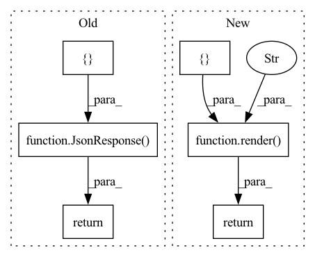

Pattern ID :14353

Before Change
def get(self, request):
r = redis.Redis(connection_pool=settings.REDIS_FEED_UPDATE_POOL)
return JsonResponse({
"update_queue": r.scard("queued_feeds"),
"feeds_fetched": r.zcard("fetched_feeds_last_hour"),
"tasked_feeds": r.zcard("tasked_feeds"),
"error_feeds": r.zcard("error_feeds"),
"celery_update_feeds": r.llen("update_feeds"),
"celery_new_feeds": r.llen("new_feeds"),
"celery_push_feeds": r.llen("push_feeds"),
"celery_work_queue": r.llen("work_queue"),
"celery_search_queue": r.llen("search_indexer"),
})
After Change
"celery_work_queue": r.llen("work_queue"),
"celery_search_queue": r.llen("search_indexer"),
}
return render(request, "monitor/prometheus_data.html", {"data": data})
In pattern: SUPERPATTERN
Frequency: 6
Non-data size: 6
Instances
Fragment ID: 47431153
Project Name: samuelclay/NewsBlur
Commit Name: b29532952f4996699a16b4a0b2bdc68c250bed3b
Time: 2021-04-27
Author: jonathanamath@gmail.com
File Name: apps/monitor/views/newsblur_updates.py
M Class Name: Updates
N Class Name: Updates
M Method Name: get(2)
N Method Name: get(2)
M Parent Class: View
N Parent Class: View
M File Name: apps/monitor/views/newsblur_updates.py
N File Name: apps/monitor/views/newsblur_updates.py
M Start Line: 12
M End Line: 22
N Start Line: 12
N End Line: 23
'>
Before Change
r = redis.Redis(connection_pool=settings.REDIS_FEED_UPDATE_POOL)
return JsonResponse({
"scheduled_feeds": r.zcard("scheduled_updates"),
"exception_feeds": exception_feeds,
"exception_pages": exception_pages,
"duplicate_feeds": duplicate_feeds,
"active_feeds": active_feeds,
"push_feeds": push_feeds,
})
After Change
"active_feeds": active_feeds,
"push_feeds": push_feeds,
}
return render(request, "monitor/prometheus_data.html", {"data": data})
'>
Fragment ID: 47431152
Project Name: samuelclay/NewsBlur
Commit Name: b29532952f4996699a16b4a0b2bdc68c250bed3b
Time: 2021-04-27
Author: jonathanamath@gmail.com
File Name: apps/monitor/views/newsblur_feed_counts.py
M Class Name: FeedCounts
N Class Name: FeedCounts
M Method Name: get(2)
N Method Name: get(2)
M Parent Class: View
N Parent Class: View
M File Name: apps/monitor/views/newsblur_feed_counts.py
N File Name: apps/monitor/views/newsblur_feed_counts.py
M Start Line: 13
M End Line: 47
N Start Line: 13
N End Line: 48
'>
Before Change
def get(self, request):
return JsonResponse({
"sql_avg": MStatistics.get("latest_sql_avg"),
"mongo_avg": MStatistics.get("latest_mongo_avg"),
"redis_avg": MStatistics.get("latest_redis_avg"),
"task_sql_avg": MStatistics.get("latest_task_sql_avg"),
"task_mongo_avg": MStatistics.get("latest_task_mongo_avg"),
"task_redis_avg": MStatistics.get("latest_task_redis_avg"),
})
After Change
"task_redis_avg": MStatistics.get("latest_task_redis_avg"),
}
return render(request, "monitor/prometheus_data.html", {"data": data})
'>
Fragment ID: 47431151
Project Name: samuelclay/NewsBlur
Commit Name: b29532952f4996699a16b4a0b2bdc68c250bed3b
Time: 2021-04-27
Author: jonathanamath@gmail.com
File Name: apps/monitor/views/newsblur_dbtimes.py
M Class Name: DbTimes
N Class Name: DbTimes
M Method Name: get(2)
N Method Name: get(2)
M Parent Class: View
N Parent Class: View
M File Name: apps/monitor/views/newsblur_dbtimes.py
N File Name: apps/monitor/views/newsblur_dbtimes.py
M Start Line: 11
M End Line: 18
N Start Line: 11
N End Line: 20
'>
Before Change
def get(self, request):
from apps.statistics.models import MStatistics
return JsonResponse({
"feed_loadtimes_avg_hour": MStatistics.get("latest_avg_time_taken"),
"feeds_loaded_hour": MStatistics.get("latest_sites_loaded"),
})
After Change
"feed_loadtimes_avg_hour": MStatistics.get("latest_avg_time_taken"),
"feeds_loaded_hour": MStatistics.get("latest_sites_loaded"),
}
return render(request, "monitor/prometheus_data.html", {"data": data})
'>
Fragment ID: 47431150
Project Name: samuelclay/NewsBlur
Commit Name: b29532952f4996699a16b4a0b2bdc68c250bed3b
Time: 2021-04-27
Author: jonathanamath@gmail.com
File Name: apps/monitor/views/newsblur_loadtimes.py
M Class Name: LoadTimes
N Class Name: LoadTimes
M Method Name: get(2)
N Method Name: get(2)
M Parent Class: View
N Parent Class: View
M File Name: apps/monitor/views/newsblur_loadtimes.py
N File Name: apps/monitor/views/newsblur_loadtimes.py
M Start Line: 9
M End Line: 12
N Start Line: 9
N End Line: 13
'>
Before Change
subscriptions_count = UserSubscription.objects.all().count()
MStatistics.set("munin:subscriptions_count", subscriptions_count, 60*60*12)
return JsonResponse({
"feeds": feeds_count,
"subscriptions": subscriptions_count,
"profiles": MSocialProfile.objects.count(),
"social_subscriptions": MSocialSubscription.objects.count(),
})
After Change
"social_subscriptions": MSocialSubscription.objects.count(),
}
return render(request, "monitor/prometheus_data.html", {"data": data})
'>
Fragment ID: 47431149
Project Name: samuelclay/NewsBlur
Commit Name: b29532952f4996699a16b4a0b2bdc68c250bed3b
Time: 2021-04-27
Author: jonathanamath@gmail.com
File Name: apps/monitor/views/newsblur_feeds.py
M Class Name: Feeds
N Class Name: Feeds
M Method Name: get(2)
N Method Name: get(2)
M Parent Class: View
N Parent Class: View
M File Name: apps/monitor/views/newsblur_feeds.py
N File Name: apps/monitor/views/newsblur_feeds.py
M Start Line: 13
M End Line: 28
N Start Line: 13
N End Line: 30
'>
Before Change
last_month = datetime.datetime.utcnow() - datetime.timedelta(days=30)
last_day = datetime.datetime.utcnow() - datetime.timedelta(minutes=60*24)
return JsonResponse({
"all": User.objects.count(),
"monthly": Profile.objects.filter(last_seen_on__gte=last_month).count(),
"daily": Profile.objects.filter(last_seen_on__gte=last_day).count(),
"premium": Profile.objects.filter(is_premium=True).count(),
"queued": RNewUserQueue.user_count(),
})
After Change
"premium": Profile.objects.filter(is_premium=True).count(),
"queued": RNewUserQueue.user_count(),
}
return render(request, "monitor/prometheus_data.html", {"data": data})
'>
Fragment ID: 47431148
Project Name: samuelclay/NewsBlur
Commit Name: b29532952f4996699a16b4a0b2bdc68c250bed3b
Time: 2021-04-27
Author: jonathanamath@gmail.com
File Name: apps/monitor/views/newsblur_users.py
M Class Name: Users
N Class Name: Users
M Method Name: get(2)
N Method Name: get(2)
M Parent Class: View
N Parent Class: View
M File Name: apps/monitor/views/newsblur_users.py
N File Name: apps/monitor/views/newsblur_users.py
M Start Line: 15
M End Line: 21
N Start Line: 15
N End Line: 22